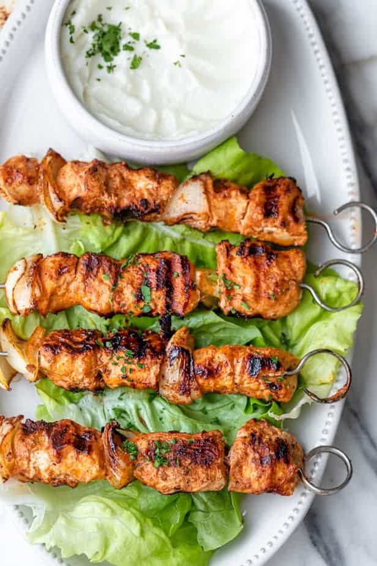

The pride of Lebanon

Origin
Chicken Tawook is a lebanese dish marinated mainly with garlic, yoghurt and lemon juice.
It is exteremly popular around Lebanon, and is one of the nations most eaten dishes.
It is primarily grilled over a high heat, and served with Lebanese bread, and Hummus
- 1 KG of Boneless chicken breast
- 1/2 cup of full fat plain yoghurt
- 1/4 cup of Lemon Juice
- 6 garlic cloves crushed
- 1 TBSP tomato paste
- 1 TSP paprika
- 3/4 TSP cinnamon
- 1/2 TSP oregano
- 1/2 TSP ground ginger
- 1 TSP salt
- 1/4 TSP black pepper
- In a large bowl, add the ingredients for the marinade (yogurt, lemon juice, olive oil, garlic, tomato paste, all the seasoning and salt/pepper) and whisk to combine.
- Place the chicken cubes in the same bowl and coat the chicken in the marinade. Cover, and let rest/marinate in the fridge for at least 4 hours.
- Thread the chicken on skewers right before grilling. Add one wedge of onions to each skewer, if desired.
- Grill on medium heat for 5-8 minutes per side.
- Serve with pita bread, lettuce and garlic sauce, if desired.
Back to home